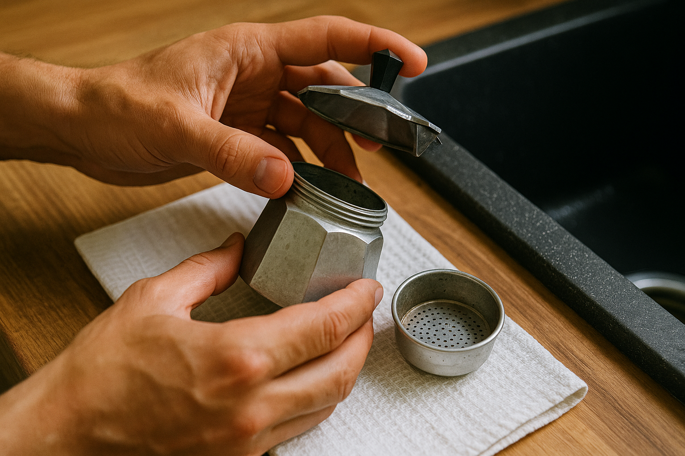
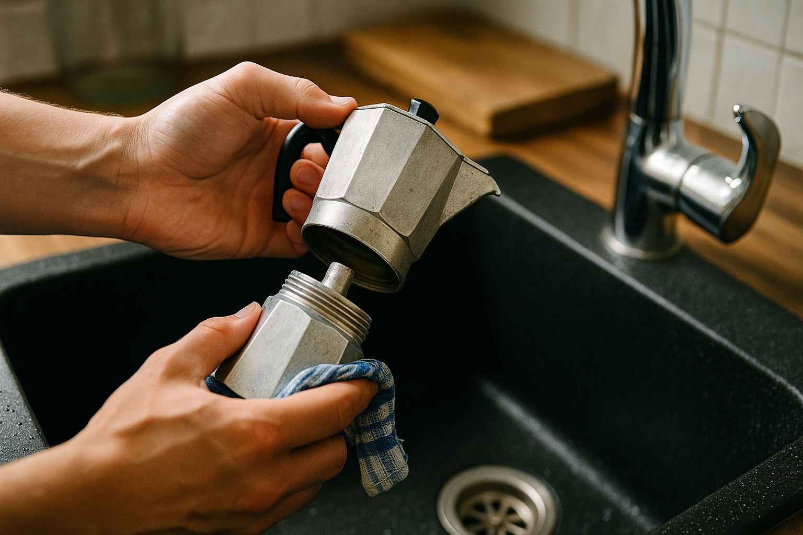

BELANGRIJKSTE REGEL
Gebruik NOOIT zeep of afwasmiddel in je percolator
Waarom niet?
- Zeep hecht aan aluminium en RVS
- Geeft je koffie een chemische bijsmaak
- Tast de beschermende olielaag aan
- Kan aluminium dof en vlekkerig maken
Gebruik in plaats daarvan:
- Warm water en een zachte borstel
- Azijn voor ontkalking
- Bakingsoda voor hardnekkige vlekken
- Rijst voor natuurlijk polijsten
Deze regel geldt voor ALLE percolatortypes: aluminium, RVS, elektrisch.
Eerste gebruik: nieuwe percolator klaarmaken
Voor je eerste échte kop koffie moet je percolator goed voorbereid worden. Dit verwijdert productieresten, creëert een beschermende olielaag en zorgt ervoor dat je eerste koffie perfect smaakt. Overslaan van deze stap is de meest gemaakte fout bij nieuwe percolator eigenaren.
Stap voor stap eerste reiniging
EERSTE REINIGING PROTOCOL
- Uitpakken en inspecteren: Controleer alle onderdelen op transportschade
- Grondig spoelen: Alle onderdelen 2-3 minuten onder warm stromend water
- Eerste 'weggooi' zetting: Zet koffie met oude koffie, gooi weg
- Tweede 'weggooi' zetting: Herhaal met verse koffie, gooi ook weg
- Derde zetting: Nu kun je je eerste echte koffie drinken
Waarom dit cruciaal is
- Productieresten: Metaalstof, oliën van productie
- Beschermlaag: Koffieoliën vormen natuurlijke coating
- Smaakoptimalisatie: Eerste koffie smaakt anders
- Materiaal conditioning: Vooral belangrijk bij aluminium
Wat je kunt verwachten
- Eerste zetting: Metaalachtige smaak (normaal)
- Tweede zetting: Nog licht 'nieuw' aroma
- Derde zetting: Eerste drinkbare koffie
- Na 5-10 zettingen: Optimale smaak bereikt
Verschil nieuwe aluminium vs RVS
Aluminium percolators
Hebben meer 'break-in' periode nodig. De eerste 10 zettingen ontwikkelt zich een beschermende olielaag die de smaak verbetert en oxidatie voorkomt.
- 3-5 weggooi zettingen aanbevolen
- Eerste week: dagelijks gebruik voor optimale conditioning
- Lichte verkleuring is normaal en gewenst
RVS percolators
Hebben kortere break-in periode. RVS is minder poreus dan aluminium en bereikt sneller optimale prestaties.
- 2-3 weggooi zettingen meestal voldoende
- Sneller optimale smaak (3-5 zettingen)
- Minder gevoelig voor eerste gebruik fouten
Dagelijks onderhoud (na elk gebruik)
Dagelijks onderhoud duurt slechts 2-3 minuten maar voorkomt 90% van alle percolator problemen. Deze routine doe je direct na het koffiezetten, terwijl de percolator nog warm is. Consequent dagelijks onderhoud is het verschil tussen een percolator die 2 jaar meegaat en één die 15 jaar perfect functioneert.

Dagelijkse reiniging: alle onderdelen grondig spoelen met warm water
Waarom direct na gebruik?
Koffieresten en oliën zijn makkelijker te verwijderen wanneer ze nog warm en vloeibaar zijn. Wachten tot de volgende dag maakt reiniging 3x moeilijker en kan permanente vlekken veroorzaken.
Stap 1: Laat afkoelen (5-10 minuten)
Wacht altijd tot je percolator is afgekoeld voordat je hem demonteert. Een te hete percolator kan brandwonden veroorzaken en het rubber van de pakking beschadigen door plotselinge temperatuurwisselingen.
LET OP: Afkoeltijd
- Optimale afkoeltijd: 5-10 minuten na laatste borrel
- Test: Bovenste deel moet comfortabel vast te pakken zijn
- Risico van te vroeg: Brandwonden, beschadiging pakking
- Wat NIET doen: Koud water over hete percolator
Stap 2: Demonteer volledig (1 minuut)
Haal alle onderdelen uit elkaar voor grondige reiniging. Elke hoek en spleet moet bereikbaar zijn. Halve demontering is de hoofdoorzaak van koffieresten die zich ophopen en de smaak beïnvloeden.
Onderdelen om te verwijderen:
- Bovenste reservoir (draai linksom)
- Rubber pakking (voorzichtig uit groef)
- Filter/zeef (til recht omhoog)
- Filterplaat (indien aanwezig)
Demontagetips:
- Niet forceren: Als het vast zit, laat langer afkoelen
- Rubber pakking: Gebruik vingernagel, geen mes
- Draairichting: Linksom = los, rechtsom = vast
- Volgorde: Altijd van boven naar beneden
Stap 3: Spoel met warm water (2 minuten)
Gebruik alleen warm stromend water - geen zeep, geen afwasmiddel, geen schuurmiddelen. De watertemperatuur moet comfortabel aanvoelen voor je handen (40-50°C). Te heet water kan aluminium doen uitzetten en vervormen.
Spoeltechniek per onderdeel:
- Onderste reservoir: Vul, schud, leeg - 3x herhalen
- Bovenste deel: Spoel binnenkant en buitenkant
- Filter: Houd tegen licht, alle gaatjes vrij?
- Pakking: Zacht wrijven tussen vingers
Hardnekkige resten:
- Zachte borstel: Oude tandenborstel werkt perfect
- Rijst + water: Natuurlijke schuurpasta
- Langer weken: 5 minuten in warm water
- Nooit gebruiken: Staalwol, schuurspons, zeep
Stap 4: Droog grondig (5-10 minuten)
Volledig drogen is cruciaal voor het voorkomen van schimmel, roest en kalkaanslag. Vocht dat achterblijft, vooral in hoeken en spleten, kan binnen dagen problemen veroorzaken. In vochtige keukens kan dit proces langer duren.
DROOGPROTOCOL
- Schud overtollig water weg uit alle onderdelen
- Plaats op schone theedoek (geen keukenrol - plakt)
- Onderdelen niet stapelen - elk onderdeel apart
- Luchtcirculatie: Plaats op geventileerde plek
- Controle: Voel na 10 min of alles droog is
Stap 5: Monteer en bewaar correct
Bewaar je percolator altijd gedemonteerd of met losse deksel. Een gesloten, vochtige percolator is een perfecte broedplaats voor schimmel en bacteriën. Deze simpele regel kan maanden van problemen voorkomen.
Correcte opslag:
- Deksel open: Luchtcirculatie essentieel
- Droge plek: Niet boven vaatwasser/fornuis
- Pakking los: Voorkomt vervorming
- Toegankelijk: Voor dagelijkse controle
Veelgemaakte opslagfouten:
- Gesloten bewaren: Vocht kan niet weg
- Vochtige kast: Onder gootsteen bijvoorbeeld
- Gestapeld: Onderdelen kunnen niet drogen
- Vergeten pakking: Blijft nat, wordt hard
EXPERT TIPS: Dagelijks onderhoud
Tijdbesparende tips:
- Reinig direct na gebruik (warme resten lossen makkelijker op)
- Gebruik oude tandenborstel voor filter gaatjes
- Schud water weg in plaats van deppen
- Zet onderdelen op handdoek in vaste volgorde
Kwaliteitstips:
- Controleer pakking op scheurtjes (dagelijks)
- Test veiligheidsklepje door er doorheen te blazen
- Ruik aan onderdelen - vreemde geur = probleem
- Bewaar nooit gesloten (schimmelrisico)
"In 8 jaar testen hebben we geleerd: 2 minuten dagelijks onderhoud bespaart uren aan probleemoplossing later." - Marc, hoofdtester
Wekelijks diep reinigen (10-15 minuten)
Eenmaal per week verdient je percolator een grondige reiniging. Dit voorkomt ophoping van koffie-oliën en kalkresten die de smaak kunnen beïnvloeden. Voor intensieve gebruikers (5+ kopjes per dag) raden we tweemaal per week aan. Deze diepe reiniging is de sleutel tot een percolator die decennialang perfect functioneert.
Waarom wekelijks nodig?
Dagelijks onderhoud verwijdert verse resten, maar koffie-oliën bouwen zich langzaam op in microscopische poriën. Na 7-10 zettingen kunnen deze geoxideerde oliën ranzige smaken veroorzaken die alleen met diepe reiniging te verwijderen zijn.
Materiaal en benodigdheden
WEKELIJKSE REINIGING KIT
Basis benodigdheden:
- Warm water (40-50°C)
- Witte azijn (huishoudazijn 8%)
- Zachte tandenborstel (oude)
- Schone theedoeken (2-3 stuks)
- Wattenstaafjes
- Kleine kom voor azijnoplossing
Voor hardnekkige gevallen:
- Rijst (natuurlijke schuurpasta)
- Bakingsoda (alleen voor RVS!)
- Tandenstoker (voor kleine gaatjes)
- Zachte doek (microfiber)
- Timer (voor weektijden)
Totale kosten: minder dan €5 - deze kit gaat maanden mee
Stap 1: Filter grondig schoonmaken (5 minuten)
Het filter is het meest kritische onderdeel - hier concentreren zich alle koffie-oliën en fijne deeltjes. Een verstopt of vervuild filter kan de smaak van je koffie volledig ruïneren en de doorlooptijd drastisch verlengen.
FILTER REINIGING PROTOCOL
- Visuele inspectie: Houd filter tegen licht - alle gaatjes zichtbaar?
- Eerste spoeling: 2 minuten onder warm stromend water
- Azijnbehandeling: Week 15 minuten in azijn-water (1:1)
- Borstelen: Zachte tandenborstel voor elk gaatje
- Eindcontrole: Blaas door filter - lucht moet vrij stromen
- Grondig spoelen: 3x spoelen tot azijngeur weg is
Signalen dat filter reiniging nodig is:
- Visueel: Bruine/zwarte aanslag in gaatjes
- Functie: Langzamere doorlooptijd
- Smaak: Bittere of ranzige bijsmaak
- Geur: Muf of zuur aroma
Test of filter schoon is:
- Lichttest: Alle gaatjes helder zichtbaar
- Luchttest: Vrije luchtstroom door filter
- Geurtest: Geen vreemde geuren
- Watertest: Water stroomt gelijkmatig door
Stap 2: Rubber pakking onderhouden (3 minuten)
De rubber pakking is het meest kwetsbare onderdeel van je percolator. Een beschadigde pakking veroorzaakt lekken, drukverlies en slechte koffie. Wekelijkse controle voorkomt plotselinge defecten en verlengt de levensduur aanzienlijk.
PAKKING ONDERHOUD PROTOCOL
- Voorzichtig verwijderen: Gebruik vingernagel, geen gereedschap
- Azijnbad: 10 minuten weken in azijn-water (1:2)
- Zachte reiniging: Wrijf zacht tussen vingers
- Flexibiliteitstest: Buig pakking - moet soepel blijven
- Visuele inspectie: Zoek scheurtjes, harde plekken, verkleuring
- Correct terugplaatsen: Zorg dat pakking vlak in groef ligt
Signalen voor vervanging pakking:
- Scheurtjes: Ook kleine barsten zijn fataal
- Verharding: Pakking voelt hard/bros aan
- Verkleuring: Zwart of groen (schimmel)
- Vervorming: Niet meer rond of vlak
- Lekkage: Stoom ontsnapt tijdens zetten
Levensduur verlengen:
- Wekelijkse azijnbehandeling (voorkomt verharding)
- Nooit geforceerd verwijderen (veroorzaakt scheuren)
- Droog bewaren (voorkomt schimmel)
- Temperatuurschokken vermijden (geen koud water op heet rubber)
Stap 3: Veiligheidsklepje controleren (2 minuten)
Het veiligheidsklepje is een cruciaal veiligheidsonderdeel dat overdruk voorkomt. Een geblokkeerd klepje kan gevaarlijke situaties veroorzaken en moet wekelijks gecontroleerd worden. Dit kleine onderdeel kan levens redden.
VEILIGHEIDSKLEPJE CONTROLE
- Bewegingstest: Klepje moet vrij op en neer bewegen
- Visuele inspectie: Geen koffieresten of kalkaanslag
- Luchttest: Zacht blazen - lucht moet doorstromen
- Reiniging: Wattenstaafje met azijn voor kleine gaatjes
- Eindtest: Klepje moet terugveren na indrukken
LET OP: Veiligheidsrisico's
- Geblokkeerd klepje: Kan leiden tot overdruk en explosie
- Beschadigd klepje: Vervang onmiddellijk (€3-8)
- Test na reiniging: Altijd functionaliteit controleren
- Bij twijfel: Vervang - veiligheid gaat voor
Stap 4: Binnenkant reservoir schrobben (3 minuten)
Het waterreservoir accumuleert kalkafzetting en koffie-oliën die de smaak beïnvloeden. Wekelijkse reiniging van de binnenkant voorkomt hardnekkige aanslag en houdt de koffiesmaak zuiver.
Aluminium reservoir:
- Azijn-water oplossing: 1:3 verhouding
- Zachte borstel: Geen schuurmiddelen
- Rijst-methode: Handvol rijst + water, schudden
- Oxidatie normaal: Lichte verkleuring is oké
RVS reservoir:
- Bakingsoda: Veilig voor RVS
- Steviger borstelen: RVS is krasvast
- Glans behouden: Droog poetsen na reiniging
- Vingerafdrukken: Microfiber doek
Stap 5: Buitenkant poetsen (2 minuten)
De buitenkant van je percolator verdient ook aandacht. Een schone, glanzende percolator ziet er niet alleen beter uit, maar toont ook dat je zorgvuldig bent met onderhoud.
Aluminium buitenkant:
- Zachte doek: Licht vochtig, geen zeep
- Matte uitstraling: Niet proberen te laten glanzen
- Vlekken: Azijn op doek, zacht wrijven
- Drogen: Direct afdrogen na reiniging
RVS buitenkant:
- Microfiber doek: Voor streepvrije glans
- Natuurlijke polijst: Druppel olijfolie
- Vingerafdrukken: Azijn lost vet op
- Glansrichting: Volg de metaalstructuur
WEKELIJKSE REINIGING TIJDSSCHEMA
Tijdsverdeling:
- Filter reinigen: 5 minuten
- Pakking onderhoud: 3 minuten
- Veiligheidsklepje: 2 minuten
- Reservoir schrobben: 3 minuten
- Buitenkant poetsen: 2 minuten
Totaal: 15 minuten
Frequentie aanpassen:
- Dagelijks gebruik: Elke 7 dagen
- Intensief gebruik (5+ kopjes): Elke 4-5 dagen
- Wekelijks gebruik: Elke 2-3 weken
- Occasioneel gebruik: Voor elke maand niet-gebruik
"Wekelijkse reiniging is de sleutel tot een percolator die 15 jaar meegaat in plaats van 3 jaar." - Marc, na 8 jaar testen
Maandelijks ontkalken (20-30 minuten)
Kalk is de grootste vijand van je percolator en de hoofdoorzaak van defecten. Kalkaanslag verstoopt niet alleen de waterkanalen, maar beïnvloedt ook de smaak, verlengt de brouwtijd en kan permanente schade veroorzaken. Regelmatig ontkalken is essentieel voor optimale prestaties en een lange levensduur.

Ontkalken met azijn: effectieve methode om kalkaanslag te verwijderen
Wat is kalk en waar komt het vandaan?
Kalk bestaat uit calcium- en magnesiumcarbonaten die natuurlijk in leidingwater voorkomen. Bij verhitting kristalliseren deze mineralen uit en hechten zich aan metalen oppervlakken. Hoe harder je water, hoe sneller kalkaanslag ontstaat.
Wanneer ontkalken nodig is
De frequentie van ontkalken hangt af van je watertype en gebruiksintensiteit. Hard water (veel kalk) vereist vaker ontkalken dan zacht water. Leer de signalen herkennen om tijdig in te grijpen.
SIGNALEN DAT ONTKALKING NODIG IS
Visuele signalen:
- Witte/grijze aanslag op metaal
- Vlokjes in de koffie
- Troebel water in reservoir
- Kristallen rond veiligheidsklepje
Functionele signalen:
- Langzamere percolatie (>10 min)
- Fluiten/sissen geluiden
- Metaalachtige bijsmaak
- Minder koffie in bovenste deel
ONTKALKINGSFREQUENTIE TABEL
| Gebruik | Water type | Ontkalken elke |
|---|---|---|
| Dagelijks | Hard | 2-3 weken |
| Dagelijks | Zacht | 1-2 maanden |
| 3-4x/week | Hard | 1 maand |
| 3-4x/week | Zacht | 2-3 maanden |
| Wekelijks | Hard | 2 maanden |
| Wekelijks | Zacht | 3-4 maanden |
Methode 1: Azijn ontkalking (meest gebruikt)
Witte azijn is de veiligste en meest effectieve natuurlijke ontkalker voor percolators. Het lost kalk op zonder het metaal aan te tasten en is in elke supermarkt verkrijgbaar voor minder dan €1.
AZIJN ONTKALKING PROTOCOL
Materiaal nodig:
- Witte azijn (huishoudazijn 8%)
- Water (bij voorkeur gefilterd)
- Oude koffie (wordt weggegooid)
- Timer
- Extra water voor spoelen
Mengverhoudingen:
- 1:1 azijn/water: Normale kalkaanslag
- 2:1 azijn/water: Hardnekkige kalk
- 1:2 azijn/water: Lichte aanslag
- Puur azijn: Alleen bij extreme gevallen
Onderhoud per materiaal - Aluminium vs RVS
Aluminium en RVS percolators vereisen licht verschillende onderhoudsmethoden. Elk materiaal heeft unieke eigenschappen die specifieke aandacht vereisen. Het juiste onderhoud per materiaal verlengt de levensduur aanzienlijk en houdt de prestaties optimaal.
Waarom materiaalspecifiek onderhoud?
Aluminium is poreuzer en gevoeliger voor chemische aantasting, terwijl RVS harder is maar gevoelig voor krassen. Verkeerde behandeling kan permanente schade veroorzaken die niet te herstellen is.
Aluminium percolators: traditioneel onderhoud
Aluminium percolators zijn de klassieke keuze en vereisen zachte, natuurlijke onderhoudsmethoden. Het materiaal ontwikkelt een beschermende patina die de smaak verbetert - deze moet je koesteren, niet wegpoetsen.
ALUMINIUM ONDERHOUD PROTOCOL
Wat WEL doen:
- Alleen warm water gebruiken
- Zachte borstel voor hardnekkige resten
- Azijn voor ontkalking (verdund 1:1)
- Rijst + water voor natuurlijk polijsten
- Lichte verkleuring accepteren (normaal)
- Volledig laten drogen na elke reiniging
Wat NOOIT doen:
- Zeep of afwasmiddel gebruiken
- In de vaatwasser plaatsen
- Schuurmiddelen of staalwol
- Bleekmiddel of sterke chemicaliën
- Proberen glanzend te maken
- Geforceerd schrobben
Aluminium specifieke tips:
- Oxidatie is normaal: Bruine verkleuring beschermt het metaal
- Patina ontwikkeling: Eerste maanden verandert de kleur
- Rijst-polijst methode: Handvol rijst + water, schudden
- Zwarte aanslag: Meestal koffie-oliën, niet schadelijk
Problemen voorkomen:
- Putjes vermijden: Nooit zuur laten inwerken
- Vlekken voorkomen: Direct drogen na reiniging
- Smaakbehoud: Beschermlaag niet wegpoetsen
- Levensduur: Zachte behandeling = 15+ jaar
RVS percolators: moderne duurzaamheid
RVS (roestvrij staal) percolators zijn moderner en veelzijdiger in onderhoud. Ze zijn bestand tegen meer agressieve reiniging en behouden hun glans bij juiste behandeling. Het materiaal is minder poreus dan aluminium.
RVS ONDERHOUD PROTOCOL
Voordelen RVS onderhoud:
- Bestand tegen bakingsoda
- Kan steviger geborsteld worden
- Vaatwasser mogelijk (merkafhankelijk)
- Glans te herstellen
- Minder gevoelig voor zuren
- Krasvast bij normale behandeling
RVS specifieke methoden:
- Bakingsoda pasta voor vlekken
- Microfiber doek voor glans
- Azijn voor vingerafdrukken
- Olijfolie voor natuurlijke glans
- Citroenzuur veilig te gebruiken
- Zachte schuurspons toegestaan
Veelvoorkomende problemen oplossen
Zelfs met goed onderhoud kunnen er problemen optreden. Hier is onze troubleshooting gids gebaseerd op 8 jaar ervaring en duizenden vragen van lezers. De meeste problemen zijn eenvoudig op te lossen als je weet wat je moet doen.
Probleem 1: Koffie smaakt bitter, vies of ranzige
Symptomen nauwkeurig
- Bittere bijsmaak: Zelfs met verse koffie
- Ranzige geur: Muf of zuur aroma
- Metaalachtige smaak: Vooral bij eerste slok
- Onaangename nasmaak: Blijft lang hangen
Primaire oorzaken
- Geoxideerde koffie-oliën in filter
- Oude rubber pakking
- Onvoldoende dagelijkse reiniging
- Vochtige opslag (schimmel)
- Zeep resten (fataal voor smaak)
- Kalkaanslag in waterkanalen
- Vervuilde veiligheidsklepje
- Te oude koffie gebruikt
Diagnose stappen
- Ruik aan onderdelen: Filter, pakking, reservoir
- Controleer pakking: Zwarte vlekken = schimmel
- Test met schoon water: Zet alleen water, proef resultaat
- Inspecteer filter: Houd tegen licht, donkere aanslag?
Oplossingen stap-voor-stap
- Grondige azijnbehandeling: Alle onderdelen 30 min weken
- Vervang rubber pakking: Kost €3, voorkomt herhaling
- Filter intensief borstelen: Elk gaatje moet vrij zijn
- 3x spoelen: Tot geen azijngeur meer
- Test run: Zet schoon water, controleer smaak
Preventie voor toekomst:
- Dagelijks grondig spoelen na gebruik
- Pakking elke 12-18 maanden vervangen
- Nooit zeep gebruiken
- Volledig drogen voor opslag
Probleem 2: Percolator lekt tussen kamers
Symptomen en oorzaken
Stoom of water ontsnapt tussen boven- en onderdeel tijdens het zetten. Dit veroorzaakt drukverlies en zwakke koffie.
Meest voorkomende oorzaken:
- Versleten rubber pakking (90% van gevallen)
- Niet goed vastgeschroefd
- Vervormde schroefdraad
- Koffieresten in pakking groef
Diagnose checklist:
- Inspecteer pakking op scheurtjes
- Controleer flexibiliteit rubber
- Test schroefdraad soepelheid
- Zoek naar koffieresten in groef
Oplossing per oorzaak
- Versleten pakking: Vervang onmiddellijk (€2-5), test na vervanging
- Losse schroef: Draai steviger vast, maar niet forceren
- Vervormde draad: Professionele reparatie of vervanging overwegen
- Vervuilde groef: Grondig reinigen met tandenborstel
Probleem 3: Koffie komt er niet uit / trage percolatie
Symptomen herkennen
- Zeer langzame doorloop: >15 minuten voor 3 kopjes
- Weinig koffie boven: Reservoir blijft grotendeels leeg
- Vreemde geluiden: Excessief fluiten of sissen
- Ongelijkmatige stroom: Koffie komt in schokjes
Oorzaken en oplossingen:
- Verstopt filter: Intensieve azijnbehandeling + borstelen
- Te fijne koffie: Gebruik grovere maling
- Kalkaanslag: Grondige ontkalking nodig
- Geblokkeerd klepje: Reinigen met tandenstoker
Preventieve maatregelen:
- Wekelijkse filter controle
- Juiste koffiemaling gebruiken
- Regelmatig ontkalken
- Veiligheidsklepje maandelijks testen
Veelgestelde vragen (FAQ)
De meest gestelde vragen over percolator onderhoud, beantwoord door onze experts op basis van 8 jaar ervaring en duizenden vragen van lezers.
Mag mijn percolator in de vaatwasser?
Dit hangt af van het materiaal en merk. Aluminium percolators: Nooit in de vaatwasser - dit tast het materiaal aan en vernielt de beschermende olielaag. RVS percolators: Sommige merken zijn vaatwasserbestendig, maar controleer altijd de handleiding.
Onze aanbeveling: Was alle percolators handmatig met warm water. Dit is veiliger en verlengt de levensduur aanzienlijk.
Waarom ruikt mijn percolator vies?
Vieze geuren komen meestal door geoxideerde koffie-oliën, schimmel door vochtige opslag, of zeep resten. Diagnose: Ruik aan elk onderdeel apart - filter, pakking en reservoir.
Oplossing: Grondige azijnbehandeling (30 minuten weken), vervang de rubber pakking (€3), en zorg voor volledig droge opslag.
Preventie: Dagelijks grondig spoelen, volledig drogen, en open bewaren.
Hoe vaak moet ik ontkalken?
Dit hangt af van je watertype en gebruiksfrequentie:
- Dagelijks gebruik + hard water: Elke 2-3 weken
- Dagelijks gebruik + zacht water: Elke 1-2 maanden
- Wekelijks gebruik: Elke 2-4 maanden
Signalen: Witte aanslag, langzamere percolatie, metaalachtige smaak, of fluiten/sissen geluiden.
Kan ik citroenzuur gebruiken in plaats van azijn?
Ja, citroenzuur is een uitstekend alternatief! Het is even effectief als azijn maar laat geen geur achter. Gebruik 2 theelepels citroenzuur per liter water.
Voordelen: Geen azijngeur, even effectief, veilig voor alle materialen. Nadelen: Iets duurder dan azijn, niet altijd voorradig.
Procedure: Zelfde als azijn - oplossen, doorlopen, 30 minuten laten inwerken, grondig spoelen.
Mijn koffie smaakt bitter, komt dit door onderhoud?
Bittere smaak kan door onderhoud komen, maar ook door bereidingsfouten. Onderhoud gerelateerd: Oude koffie-oliën, vervuilde filter, versleten pakking, of zeep resten.
Bereidingsgerelateerd: Te fijne maling, te lange extractie, te heet water, of oude koffie.
Test: Zet alleen water door je percolator. Smaakt dit neutraal? Dan is onderhoud oké. Smaakt het vies? Dan is grondige reiniging nodig.
Hoe vervang ik de rubber pakking?
Stap-voor-stap vervanging:
- Demonteer percolator volledig
- Verwijder oude pakking voorzichtig (gebruik vingernagel)
- Reinig de groef grondig
- Plaats nieuwe pakking - zorg dat hij vlak ligt
- Test op lekkage voor eerste gebruik
Waar kopen: Bialetti dealers, online shops, of universele pakkingen. Kost €2-5 en gaat 12-18 maanden mee.
Is zwarte verkleuring in aluminium normaal?
Ja, dit is meestal normaal en gewenst! Aluminium ontwikkelt natuurlijke oxidatie die een beschermende laag vormt. Deze patina verbetert de smaak en voorkomt verdere oxidatie.
Normale verkleuring: Gelijkmatige bruine/zwarte tint, ontwikkelt geleidelijk, geen vreemde geur.
Problematische verkleuring: Plotselinge zwarte vlekken, groene tint, schimmelgeur, of putjes. Dan is actie nodig.
Kan ik bakingsoda gebruiken voor reiniging?
Voor RVS percolators: Ja, veilig en effectief. Maak een pasta van bakingsoda en water voor hardnekkige vlekken. Laat 15 minuten inwerken en spoel grondig.
Voor aluminium percolators: Vermijden. Bakingsoda kan aluminium aantasten en de beschermende laag beschadigen. Gebruik alleen azijn en water.
Dosering RVS: 2 theelepels bakingsoda + 1 theelepel water = pasta consistentie.
Moet ik mijn nieuwe percolator eerst reinigen?
Absoluut ja! Nieuwe percolators bevatten productieresten, oliën van fabricage, en soms metaalstof. Deze beïnvloeden de smaak van je eerste koffie.
Procedure nieuwe percolator: Grondig spoelen, 2-3 'weggooi' zettingen met oude koffie, dan pas echte koffie zetten.
Waarom belangrijk: Verwijdert productieresten, start ontwikkeling beschermlaag, voorkomt metaalachtige bijsmaak.
Hoe vaak filter vervangen?
Filters gaan veel langer mee dan pakkingen. Levensduur: 3-5 jaar bij normaal gebruik, afhankelijk van onderhoud en waterkwaliteit.
Signalen voor vervanging: Deuken die niet uitdrukken, scheuren in het metaal, verstopte gaatjes die niet schoon worden, of vervorming waardoor filter niet meer goed past.
Impact op smaak: Een beschadigd filter laat koffiedrab door en kan de extractie beïnvloeden. Vervanging kost €5-10.
Wat doe ik als mijn percolator niet meer te redden is?
Soms is een percolator te ver heen voor reparatie. Signalen: Permanente smaakproblemen na grondige reiniging, structurele schade, of veiligheidsrisico's.
Overweeg vervanging bij: Scheuren in het metaal, onrepareerbaar handvat, extreme corrosie, of kosten reparatie > 50% van nieuwe percolator.
Bekijk onze top 10 aanbevelingen voor een nieuwe percolator die jaren meegaat.
Opslag en langdurig niet-gebruik
Correcte opslag verlengt de levensduur van je percolator aanzienlijk. Of je hem dagelijks gebruikt of maanden wegzet - de juiste opslag voorkomt problemen en houdt je percolator in topconditie.
Dagelijkse opslag tussen gebruik
DAGELIJKSE OPSLAG CHECKLIST
- Volledig gedemonteerd: Alle onderdelen apart
- 100% droog: Geen vocht in hoeken of spleten
- Geventileerde plek: Luchtcirculatie essentieel
- Toegankelijk: Voor dagelijkse controle
- Schoon oppervlak: Geen koffieresten of vlekken
Seizoensopslag of lange vakantie (1+ maanden)
Voor langdurige opslag is extra voorbereiding nodig. Een maand vochtige opslag kan maanden van problemen veroorzaken.
VOORBEREIDING LANGE OPSLAG
- Intensieve reiniging: Azijnbehandeling alle onderdelen
- 24 uur drogen: In warme, droge omgeving
- Inspectie: Controleer alle onderdelen op schade
- Onderdelen apart: Nooit gemonteerd opslaan
- Droge verpakking: Papier of doek, geen plastic
- Droge locatie: Niet in kelder of vochtige ruimtes
Na lange periode opnieuw gebruiken
Na maanden niet-gebruik verdient je percolator extra aandacht voordat je weer koffie zet.
Inspectie checklist:
- Visuele controle: Zoek naar roest, schimmel, beschadiging
- Geurtest: Ruik aan alle onderdelen
- Pakking flexibiliteit: Nog soepel of hard geworden?
- Veiligheidsklepje: Beweegt het nog vrij?
Heractivatie protocol:
- Grondige reiniging: Alsof het nieuw is
- Test run: Alleen water, controleer smaak
- Weggooi zetting: Eerste koffie weggooien
- Normale routine: Hervat dagelijks onderhoud
Complete onderhouds checklist
COMPLETE ONDERHOUDS CHECKLIST
NA ELK GEBRUIK (2-3 min)
- ☐ Laten afkoelen (5-10 min)
- ☐ Volledig demonteren
- ☐ Spoelen met warm water (geen zeep)
- ☐ Grondig drogen
- ☐ Open opbergen
WEKELIJKS (10-15 min)
- ☐ Filter intensief reinigen
- ☐ Pakking verwijderen en controleren
- ☐ Veiligheidsklepje testen
- ☐ Reservoir binnenin schrobben
- ☐ Buitenkant poetsen
MAANDELIJKS (20-30 min)
- ☐ Ontkalken met azijn/citroenzuur
- ☐ Grondig spoelen (3-5 cycli)
- ☐ Test koffiezetting
- ☐ Alle onderdelen inspecteren
JAARLIJKS
- ☐ Pakking vervangen (€2-5)
- ☐ Grondige inspectie alle onderdelen
- ☐ Overweeg filter vervanging
- ☐ Evalueer algemene staat
BIJ PROBLEMEN
- ☐ Diagnose volgens troubleshooting gids
- ☐ Grondige azijnbehandeling proberen
- ☐ Onderdelen vervangen indien nodig
- ☐ Bij twijfel: expert raadplegen
Expert tip van Marc
"Print deze checklist uit en hang hem in je keuken. Na 8 jaar testen kan ik je verzekeren: consequent onderhoud is het verschil tussen een percolator die 3 jaar meegaat en één die 15 jaar perfect functioneert. De investering in tijd loont zich dubbel en dwars terug."
Over de auteur
Marc van der Berg
Hoofdtester & Onderhoud Expert
8 jaar ervaring • 50+ percolators getest
"Ik test elke percolator minimaal 3 maanden in mijn eigen keuken. Deze onderhoudsgids is gebaseerd op duizenden uren praktijkervaring en de fouten die ik zelf heb gemaakt. Geen gesponsorde content, alleen eerlijke expertise."
Expertise & ervaring
- 8 jaar intensief testen percolators
- 50+ modellen getest en onderhouden
- 2.847 kopjes koffie gezet tijdens tests
- 127 uur besteed aan onderhoud research
- Duizenden vragen beantwoord van lezers